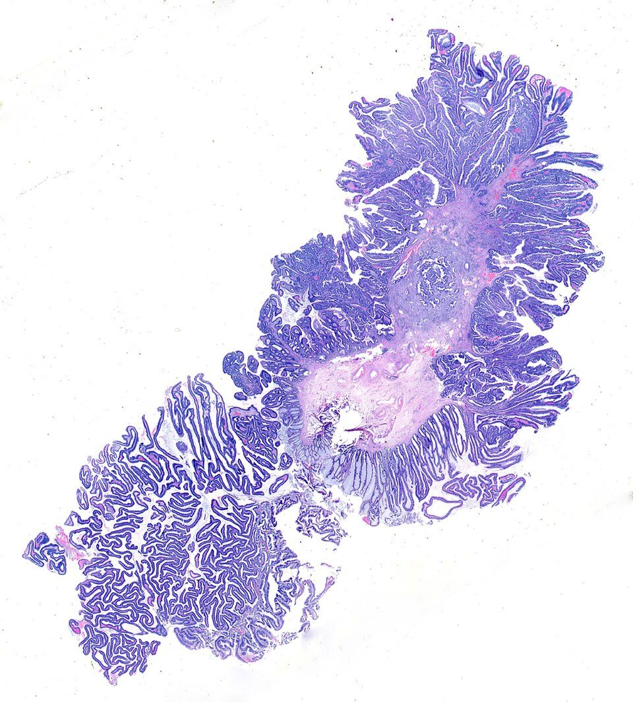

General information only. It does not replace advice from your care team and should not be used to choose a treatment.

.jpg){kind=link}
At a glance
| How common | A third of colorectal cancers |
| Signs | Rectal bleeding, change in bowel habit, feeling of incomplete emptying (tenesmus) |
| Key test | Pelvic MRI |
| Treatment | Total neoadjuvant therapy, surgery with total mesorectal excision; organ preservation with a complete response |
| New | Immunotherapy alone for dMMR tumours, making the tumour disappear in almost all cases |
Why it is treated separately
The rectum lies in the pelvis, surrounded by the bladder, prostate or vagina, and by the nerves controlling continence and sexual function. Therefore:
- Local relapses were common before total mesorectal excision (TME), described by Bill Heald in 1982.
- Radiotherapy is useful (unlike in the colon).
- Surgery may require a temporary stoma or, if the tumour is very close to the anus, a permanent one.
It shares risk factors, screening and biology with colorectal cancer.
Diagnosis
- Digital rectal examination and colonoscopy with biopsy.
- High-resolution pelvic MRI: measures distance from the anus, involvement of the mesorectum and its surrounding fascia (circumferential margin) and venous invasion. It is the test that decides treatment.
- Endoscopic ultrasound for very early tumours.
- CT of chest and abdomen, CEA and dMMR/MSI testing.
Treatment
Early tumours (T1-T2 without nodes): surgery directly; for some very small T1 tumours, local transanal excision.
Locally advanced tumours: - Total neoadjuvant therapy (TNT): radiotherapy (5-session short course or long-course chemoradiotherapy with capecitabine) and all the chemotherapy (FOLFOX or CAPOX) before surgery. It reduces metastases and increases complete responses (RAPIDO and PRODIGE 23 trials). - Surgery: low anterior resection with TME, often keyhole, robotic or transanal (TaTME), with a temporary protective ileostomy; for very low tumours, abdominoperineal resection with a permanent colostomy. - Watch and wait: if after treatment no tumour is visible on endoscopy or MRI (clinical complete response), surgery can be avoided with very close follow-up. In the OPRA trial, about half kept their rectum; local regrowth, in 25-30%, can almost always be rescued with surgery. - dMMR/MSI-H tumours (5-10%): dostarlimab alone for six months made the tumour disappear completely in every patient in the Memorial Sloan Kettering study (Cercek, 2022), with no radiotherapy or surgery. It is a historic change.
Metastatic disease: as for colon cancer.
After-effects and quality of life
- Low anterior resection syndrome: urgency, frequent or fragmented stools and incontinence, usually improving over 1-2 years. Pelvic floor physiotherapy, diet and transanal irrigation help.
- Urinary and sexual problems (erectile dysfunction, painful sex, dryness), and infertility or early menopause from radiotherapy: ask about fertility preservation before starting.
- Stomas: support from stoma nurses and patient groups.
Outlook
Five-year survival is similar to colon cancer (about 65-70% overall). With TME and radiotherapy, local relapses fell from over 25% to below 5-10%.
See also: Colorectal cancer, Anal cancer, Radiotherapy, Fertility and cancer.
Sources
- Glynne-Jones R, et al. Rectal cancer: ESMO Clinical Practice Guidelines. Ann Oncol. 2017;28(Suppl 4):iv22-iv40. doi:10.1093/annonc/mdx224
- Bahadoer RR, et al. Short-course radiotherapy followed by chemotherapy before total mesorectal excision versus preoperative chemoradiotherapy (RAPIDO). Lancet Oncol. 2021;22:29-42. doi:10.1016/S1470-2045(20)30555-6
- Garcia-Aguilar J, et al. Organ preservation in patients with rectal adenocarcinoma treated with total neoadjuvant therapy (OPRA). J Clin Oncol. 2022;40:2546-2556. doi:10.1200/JCO.22.00032
- Cercek A, et al. PD-1 blockade in mismatch repair-deficient, locally advanced rectal cancer. N Engl J Med. 2022;386:2363-2376. doi:10.1056/NEJMoa2201445
- Heald RJ, Husband EM, Ryall RD. The mesorectum in rectal cancer surgery: the clue to pelvic recurrence? Br J Surg. 1982;69:613-616. doi:10.1002/bjs.1800691019